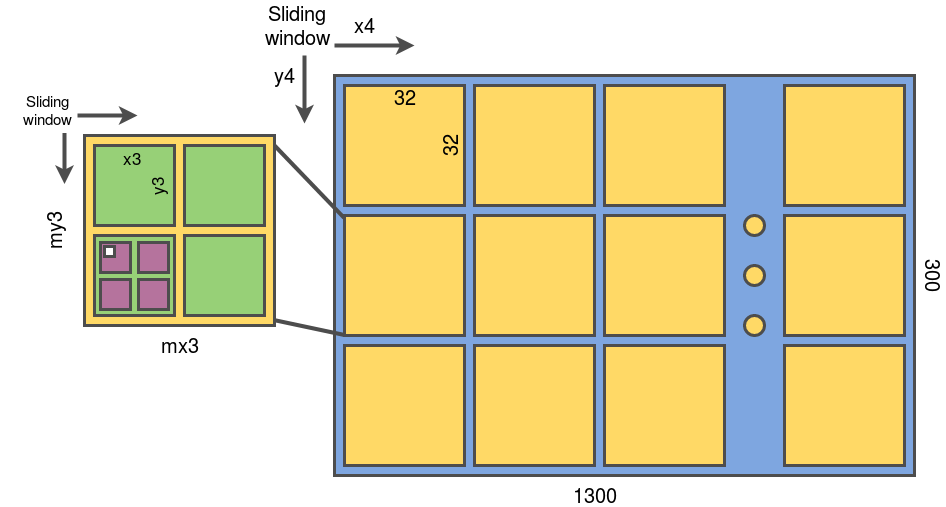

Direct Sparse Odometry
How did it conceptualize?
Direct Sparse Odometry originated as a body of work for Visual Odometry using Monocular camera and Direct methods. Previously they made a breakthrough in Direct Methods using LSD-SLAM, but eventually it was seen that the method was computationally very expensive. If this methods has to be deployed on hardware such as robots and handheld systems, they need to be lightweight.
In case of DSO, they use a windowed optimization approach, where the pose calculation takes place over a window of 7 frames (set as a parameter). This is basically a real-time windowed bundle adjustment, and hence can be used to optimize the reprojection error and hence calculate the inverse depth and ultimately the pose and hence the odometry of the camera sensor.
The work has extended over the years, with different additions, such as Loop Closure, Dynamic Marginalization and Saliency Maps. They aim to solve problems that are specific to the use of the algorithm in a efficient manner, and also overcome its shortcomings.
Fundamental Components of DSO
Pixel Selector and Gradients
DSO heavily depends on getting the anchor points for tracking by using gradients of the image pixel intensities. The horizontal and vertical image gradients are squared and added to form a map, which has the same size of the image. This is then cut into blocks of 32 x 32 blocks and for each block, calculate their gradients into histograms, which helps to threshold easily.

A sliding window is used to calculate a local gradient within a neighbourhood, and then select points using a threshold value. After the keypoints are selected, then they are reprojected onto the next frame, bundle adjustment is then carried out to reduce the reprojection error defined, which parametrizes on inverse depth, to solve depth and pose estimation.
Gradient Pixel Selection by Ran Cheng is a blog post written by an ex-researcher from McGill University, which explains the code part of this pixel selector concept, and how does it exactly emulate a convolution operation through the different levels of resolution (Pyramid Levels).
Photometric Error formulation and parameterization

The photometric error function seeks to minimise the photometric difference between observations of the same 3D point across multiple frames. The photometric error for a point p in reference frame I_i, viewed in a target frame I_j, is defined as the weighted sum of squared differences (SSD) over a small neighbourhood of pixels N_p around the projected point.
The above is the energy function of the algorithm. It is to be noted that this implementation is parameterized on the inverse depth. To understand in depth about this concept, there is a link to the word document given in the Resources and References column, which contains links to relevant papers explaining the SSD calculation and the requirement for an inverse depth parameterization.
Challenges for the method
Non-linear optimisation algorithms are used to minimise photometric error while estimating camera positions and pixel depth. Direct approaches are effective in low-texture settings and can provide rich 3D reconstructions due to their ability to utilise a large amount of image data. Direct picture alignment approaches are highly sensitive to unmodeled artefacts including rolling shutter, camera auto exposure, and gain control.
Camera sensors are far from perfect. The build of the camera makes it prone to a lot of distortions of images. These distortions have to be modelled so that we can use this information to undistort the images.
ROS 2 development
Docker was used to create a container with Ubuntu 22.04 and ROS 2 installation on it. The version of ROS used was Humble Hawkskill. The issues initally was mainly towards bringing the syntax upto the version with which we can write a wrapper code.
For DSO and LDSO, the algorithm reads and runs very similarly. Step-by-Step Procedure to Implement DSO and LDSO with C++17 is a guide, which provides a guide to run the algorithm with a dataset in the latest versions of code and distro's.
Once this is setup properly, primarly the viewer Pangolin, which is a C++ based GUI, needs to be removed completely and our wrapper code needs to be written instead. The Output3DWrapper.h files shows the functions and their outputs, which can be used to extract the required data from the algorithm. Step by Step DSO with ROS 2+RViz enlists the step by step process to create a docker and work with a ROS 2 image and the development of the wrapper code.
Results
Results contains the results from runs using different VO datasets and custom datasets as well. The results from the ROS 2 development is also added to the same folder.
Challenges and Future Works
Different DSO Implementations
Due to the above shortcomings there are many implementation of DSO with addition of many different elements to mitigate the results of some of the shortcomings
DSO with Dynamic Marginalization
Feature based Localization with Direct Visual Odometry
Resources and References
Research-DSO contains resources to understand the fundamental concepts and building blocks deployed to build the DSO method.